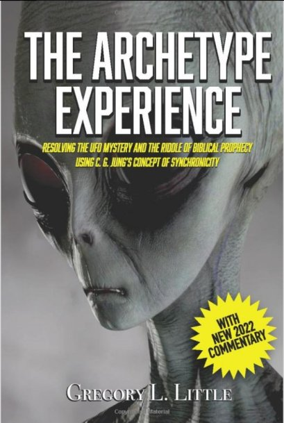

On Gregory L. Littled's hypothesis explaining UFO/abduction
Preface
- I recently addressed the claims of the "Condign report" in a previous article below.- Plasma (= orb) causes hallucinations in nearby humans. In other words, plasma is the cause of UFOs. ref: "Condign report" theory of "plasma-induced hallucination" cannot explain UFO phenomena (2022-04-16)- In a previous article above this one, I quoted an article written by Gregory L. Littled that contained some surprising details. I will discuss it below.Summary
- Already in the 1990s, Gregory L. Littled proposed the following hypothesis (*1) - (a) The core of the UFO phenomenon is a plasma phenomenon generated by natural energy resulting from distortion of the earth's crust. - (b) Abduction phenomena are related to changes in specific brain regions affected by electromagnetic fields.My View
- If we replace "plasma" in Gregory L. Littled's hypothesis with "EMF anomaly" and add "resonant cognition hypothesis", it is not much different from my hypothesis. - It seems that someone else had already thought of what I had thought of. - The fact that neither the name Gregory L. Littled nor his theory has ever been heard or seen before means that it is almost unknown (or ignored) even among UFO enthusiasts/researchers. Naturally, my hypothesis will also be ignored.(*1)
Dr. Greg Little Alternate Perceptions' Longstanding Interest In Plasma UFOs Beginning in 1984 in the book, The Archetype Experience (available as a free pdf file), I began asserting that the mysterious light phenomena associated with UFOs was a natural earth energy. In my 1990 book, People of the Web (available on Amazon.com) and the 1994 book Grand Illusions, I detailed the idea that the core of the UFO phenomena was caused by plasma phenomena generated by natural energies caused by tectonic strain. However, I have carefully outlined a number of research outcomes that point to the plasmas having an intelligence of their own. This fact was essentially proven in a series of experiments by Dr. Harley Rutledge of Southeast Missouri State University and detailed in his 1981 book Project Identification. In 1996, Brent Raynes and I made a 4-cassette tape discussing these and other ideas. The set is available in limited numbers. (If you are interested, send a check for $17.95 to AP, Box 9025, Memphis, TN 38190.) In the 1990s, while still in print form, Alternate Perceptions published a series of articles on the plasma phenomenon. These included comments from Brent Raynes, articles by Greg Long, and myself. In our Winter 1996 issue, I detailed 10 major characteristics of the plasma phenomenon. These included, 1) That the phenomenon has been observed throughout recorded history, 2) That observers of the phenomenon interpret it consistently within the specific culture, 3) That it involves powerful electromagnetic fields, 4) That experimentation on the electromagnetic fields produced by plasmas shows that they influence brain processes, 5) That the abduction phenomenon is related to changes in specific brain areas that are effected by the electromagnetic fields, 6) That "genuine" UFOs are plasmas, 7) That witnesses to these plasma events who are close to the phenomena have brain chemistry effected, 8) That there are pre-existing genetic differences in people who encounter plasma phenomena—producing different perceptions, 9) That percipients of the plasma phenomena are culturally sensitive—that is predisposed to interpret the phenomena within their beliefs, and 10) That the phenomena has an intelligence of its own. The 1992 discovery of the mineral magnetite in the human brain was one critical piece to the theory. The Condign Report asserts that the powerful electromagnetic fields produced by the plasmas affect brain chemistry producing what is today known as the abduction scenario. The report goes on to relate that research in neuropsychology has shown that this is the case. ref: UFO Plasmas & Condign Report - https://mysterious-america.com/ufoplasmascondig.html The Archetype Experience: Resolving the Ufo Mystery and the Riddle of Biblical Prophecy Using C.G. Jung's Concept of Synchronicity Paperback – April 1, 1984 by Gregory L. Littled (Author)- The article written by Gregory L. Littled states that the PDF is available for free. But a quick search did not turn up one.Beginning in 1984 in the book, The Archetype Experience (available as a free pdf file),(2022-04-17)
The article on which the translation is based
Gregory L. Littled の UFO/abduction を説明する仮説の類似性 (2022-04-17)Thanks
- Translated with www.DeepL.com/Translator (free version) (2022-04-27 translation)
First published
On Gregory L. Littled's hypothesis explaining UFO/abduction (2022-04-27)